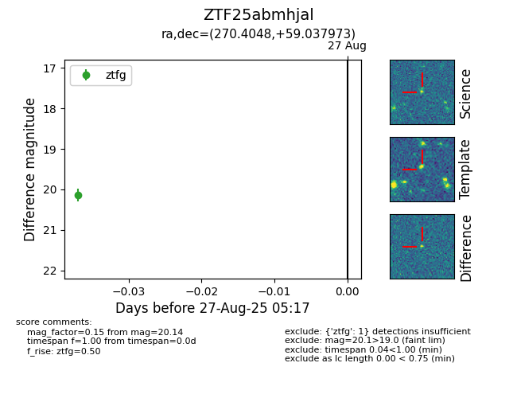

Target ZTF25abmhjal at 2025-08-27 05:17, see:
FINK: fink-portal.org/ZTF25abmhjal
Lasair: lasair-ztf.lsst.ac.uk/objects/ZTF25abmhjal
ALeRCE: alerce.online/object/ZTF25abmhjal
alt names
ZTF25abmhjal (ztf,fink)
coordinates:
equatorial (ra, dec) = (270.4048,+59.03797)
galactic (l, b) = (87.7484,+29.32467)
photometry
last ztfg=20.14
1 ztfg detections
